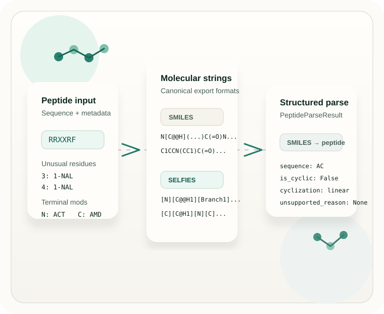

Peptide sequence to SMILES or SELFIES
Use aa_seqs_to_smiles(...) to export a peptide sequence to canonical SMILES or peptide
SELFIES for downstream chemistry and dataset workflows.
Practical peptide to SMILES and smiles to peptide workflows
Convert peptide sequences into SMILES or peptide SELFIES, and interpret peptide-like SMILES with support for non-canonical amino acids, cyclic or intramolecularly linked peptides, and terminal modifications in forward workflows.
Forward conversion supports broader peptide construction. Reverse parsing is intentionally conservative and focused on standard peptide-like molecules within PepLink v1's documented scope.

What PepLink does well
Use aa_seqs_to_smiles(...) to export a peptide sequence to canonical SMILES or peptide
SELFIES for downstream chemistry and dataset workflows.
Use smiles_to_aa_seqs(...) when you need a practical smiles to peptide step for standard
peptide-like molecules, including linear peptides and head-to-tail cyclic peptides, with structured
output and explicit unsupported reasons.
PepLink ships with 420 bundled non-canonical amino acid mappings and also supports runtime registration of custom residues for peptide sequence to smiles pipelines.
Forward generation covers selected cyclic peptide SMILES cases, intramolecular linkage classes, and bundled N- and C-terminal modifications without pretending to solve all peptide chemistry.
Why PepLink
Many peptide conversion utilities are optimized for canonical linear sequences, one-way export, or narrowly curated amino-acid sets. That makes straightforward peptide to SMILES tasks possible, but it leaves gaps when your workflow includes a non-canonical amino acid, a cyclic peptide SMILES target, or terminal modifications that matter to the final structure.
PepLink is useful when you need practical conversion rather than a generic chemistry marketing page. Its forward builder is designed around monomer peptides, bundled residue mappings, selected cyclic and intramolecularly linked peptide topologies, and terminal modifications. The reverse parser is deliberately narrower: it focuses on standard amino-acid peptides, with support centered on linear peptides and head-to-tail cyclic peptides, and clearly reports when a molecule falls outside its reliable scope.
That split makes PepLink credible for research software and agent automation. You can rely on the forward direction for richer peptide construction, and you can use reverse parsing when a conservative smiles to peptide interpretation is the safer choice.
Example workflows
aa_seqs_to_smiles(...)A realistic forward example with non-canonical residues plus terminal modifications. This is the core peptide sequence to smiles workflow.
from PepLink import aa_seqs_to_smiles
smiles = aa_seqs_to_smiles(
"RRXXRF",
unusual_amino_acids=[
{"position": 3, "name": "1-NAL"},
{"position": 4, "name": "1-NAL"},
],
n_terminal="ACT",
c_terminal="AMD",
)register_noncanonical_aa(...)Extend PepLink with your own non-canonical amino acid mappings directly in Python when bundled residue mappings are not enough for your workflow.
from PepLink import (
aa_seqs_to_smiles,
register_noncanonical_aa,
)
register_noncanonical_aa("MyAA", "N[C@@H](CC)C(=O)O")
smiles = aa_seqs_to_smiles(
"AXA",
unusual_amino_acids=[{"position": 2, "name": "MyAA"}],
)smiles_to_aa_seqs(...)
Reverse parsing returns a structured PeptideParseResult. It is best suited to standard
peptide-like molecules, including linear and head-to-tail cases.
from PepLink import smiles_to_aa_seqs
result = smiles_to_aa_seqs(
"C[C@H](N)C(=O)N[C@@H](CS)C(=O)O"
)
print(result.sequence) # AC
print(result.is_cyclic) # False
print(result.cyclization) # linear
print(result.unsupported_reason) # NoneWho it is for
Agent and tool integration
PepLink is a good fit when peptide conversion needs to sit behind an API, an MCP-compatible tool wrapper,
a workflow engine, or a lightweight Python service. The forward API accepts structured fields for residue
overrides, unusual amino acids, intrachain bonds, and terminal modifications. The reverse API returns a
structured PeptideParseResult instead of only a raw string.
That makes the package useful for AI agents and tool builders that need deterministic peptide conversion, explicit failure handling, and data that can be fed into larger automation chains without brittle text parsing.
aa_seqs_to_smiles(sequence, ..., output_format="smiles" | "selfies") -> strsmiles_to_aa_seqs(text, *, input_format="auto") -> PeptideParseResultregister_noncanonical_aa(...) and CSV helpers for custom residue supportunsupported_reason gives automation-friendly failure contextInstallation
pip install PepLinkfrom PepLink import aa_seqs_to_smiles
smiles = aa_seqs_to_smiles("AC")
print(smiles)PepLink is a Python package for peptide sequence to smiles, peptide selfies export, and conservative peptide-oriented interpretation of SMILES within its current documented scope.
FAQ
PepLink v1 focuses on monomer peptides. Forward generation supports canonical residues, D-forms, bundled non-canonical mappings, selected cyclic or intramolecularly linked peptide definitions, and terminal modifications.
Yes. PepLink includes bundled non-canonical amino acid mappings for forward workflows, and it also lets you register your own custom residues programmatically or load them from CSV when needed.
Yes for selected forward-generation cases, including documented cyclic and intramolecular linkage classes. The reverse parser is more conservative and officially narrower than the forward builder.
Yes. PepLink exposes predictable Python functions, structured reverse outputs, and explicit unsupported reasons, which makes it practical for API wrappers, MCP tools, and AI-agent backends.
Start with the GitHub repository for source, README examples, issues, and releases: github.com/DragonDescentZerotsu/PepLink.
Try PepLink
If you need peptide to SMILES conversion, peptide SELFIES export, or a conservative smiles to peptide utility for automation, PepLink is ready to evaluate in a lightweight Python workflow.